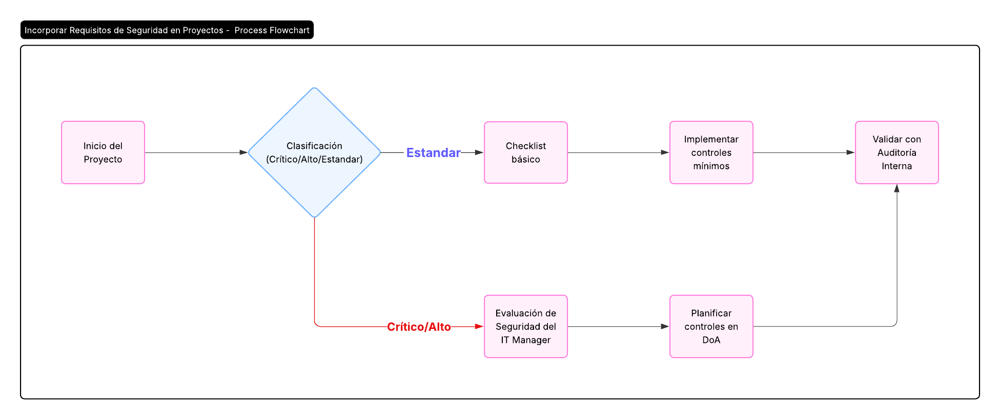

Procedimiento para Incorporar Requisitos de Seguridad en Proyectos
1 OBJETIVO
El objetivo de este procedimiento es asegurar que todos los proyectos (nuevos sistemas, migraciones, integraciones, uso), cumplan con los controles de seguridad de la información de TISAX, ISO/IEC 27001:2022 y requerimientos específicos de clientes automotrices.
2 CLASIFICACIÓN DE PROYECTOS
Criterios basados en impacto:
| Categoría | Definición | Ejemplos |
|---|---|---|
| Crítico | Proyectos que manejan datos Críticos (CATIA/NX, SIP) o infraestructura clave (Windows Server) |
|
| Alto | Proyectos con acceso a datos Altos (MS Office) o sistemas críticos |
|
| Estándar | Proyectos con datos Medio/Bajo (documentación interna) |
|
Herramienta: Matriz de clasificación inicial (evaluar en kickoff del proyecto).
3 PROYECTO NO TECNOLÓGICO - CLIENTE VW BRASIL
Proyecto: Líneas de Ensamble de Chasis - VW Brasil
Este proyecto involucra el intercambio de información crítica con VW Brasil y proveedores locales e internacionales, requiriendo controles de seguridad específicos según ISO 27001:2022 y TISAX.
Información Crítica:
- Diseños CAD 3D de componentes de chasis
- Especificaciones técnicas y tolerancias
- Planos de ensamblaje y procesos
- Documentación de propiedad intelectual
Controles Requeridos:
- Cifrado AES-256 para transferencia de archivos
- MFA para acceso a plataformas de colaboración
- Acuerdos de confidencialidad con proveedores
- Registro de acceso y transferencias
4 PROCESO DE EVALUACIÓN DE SEGURIDAD
A. FASE DE INICIO:
a. Checklist de Seguridad:
b. Asignar un "Responsable de Seguridad del Proyecto" (RSP):
Miembro del equipo de IT o IT Manager.
B. FASE DE PLANIFICACIÓN:
a. Requisitos obligatorios (para proyectos Críticos/Alto):
- Revisión de la F212-IT-1 Declaración de Aplicabilidad (DoA).
- Aprobación de arquitectura por el IT Manager (ej.: cifrado para CATIA).
b. Documentar en el plan del proyecto:
- Controles específicos (ej.: MFA para SIP, backups diarios).
- Presupuesto asignado a seguridad.
C. FASE DE EJECUCIÓN:
a. Validaciones periódicas:
- Auditorías técnicas (ej.: test de penetración en APIs de SIP4.0).
- Revisión de proveedores (ej.: SOC 2 Type II para CATIA).
D. FASE DE CIERRE:
a. Checklist final:
5 ROLES Y RESPONSABILIDADES
| Rol | Tareas | Ejemplo en Proyecto |
|---|---|---|
| Responsable de Seguridad (RSP) | Asegurar cumplimiento de controles TISAX. | Validar cifrado en migración de CATIA. |
| Líder de Proyecto | Incorporar requisitos de seguridad en cronograma/presupuesto. | Asignar recursos para MFA en SIP4.0 |
| IT Manager | Aprobar excepciones y escalar riesgos. | Autorizar acceso por Anydesk. |
6 PLANTILLA DE EVALUACIÓN DE RIESGOS POR PROYECTO
Proyecto: XXXXXXXXXX
Fecha: [DD/MM/AAAA]
| Riesgo Identificado | Control Propuesto | Responsable | Estado |
|---|---|---|---|
| Fuga de diseños 3D en tránsito | Cifrado AES-256 + VPN dedicada. | Admin IT | Implementado |
| Acceso no autorizado | MFA + políticas IAM estrictas. | IT Manager | En progreso |
Firma del RSP: _________________________
7 EVIDENCIAS Y RECOMENDACIONES
Evidencias para TISAX
- Checklists completos en cada fase del proyecto.
- Acta de aprobación del IT Manager para proyectos Críticos.
- Registros de capacitación (ej.: usuarios entrenados en nuevo SIP).
Ejemplo de Flujo del Proceso

Diagrama de flujo del proceso de incorporación de requisitos de seguridad en proyectos
Recomendaciones Clave
- Automatizar: Usar herramientas como Jira o ServiceNow o similar para integrar checklists de seguridad en flujos de proyectos.
- Capacitación: Incluir módulos de seguridad en la formación de líderes de proyecto.
8 REVISIONES DEL DOCUMENTO
| Rev. N° | Fecha | Descripción |
|---|---|---|
| 0 | 25/8/2025 | Primera Emisión del documento |
| 1 | 14/1/2026 | Revisión completa del documento |